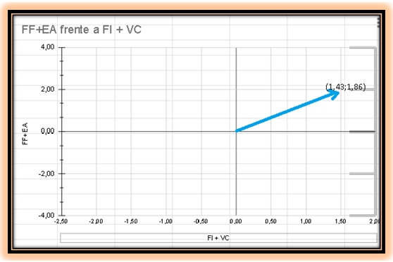

MATRIZ DE POSICIÓN ESTRATEGICA Y EVALUACIÓN DE ACCIÓN (PEyEA)
| POSICIÓN ESTRATEGICA EXTERNA | POSICIÓN ESTRATEGICA INTERNA | ||
|---|---|---|---|
| FORTALEZA FINANCIERA(FF) | Puntaje | ESTABILIDAD AMBIENTAL(EA) | Puntaje |
| Capital de trabajo. | 5 | Posicion competitiva | -1 |
| Flujo de efectivo generado. | 5 | Variabilidad de la demanda. | -2 |
| Nivel de autonomía financiera. | 5 | Tasa de inflación. | -4 |
| Rentabilidad de la inversión total. | 4 | Rango de precios en medicamentos de la competencia. | -1 |
| Liquidez. | 4 | Presión competitiva. | -2 |
| Eficiencia en el empleo de recursos. | 3 | Cambios tecnológicos. | -2 |
| Creación de valor. | 4 | Barreras del mercado. | -3 |
| 30 | -17 | ||
| 4.29 | -2.43 | ||
| VENTAJA CONPETITIVA(VC) | Puntaje | FORTALEZA INDUSTRIAL(FI) | Puntaje |
| Capacidad de respuesta. | -1 | Potencial en ventas. | 5 |
| Lealtad de los clientes. | -2 | Facilidad de entrada en el mercado. | 5 |
| Conocimiento tecnológico. | -3 | Estabilidad financiera. | 5 |
| Calidad del producto. | -1 | Incremento de demanda. | 3 |
| Diversificación. | -2 | Conocimiento tecnológico. | 3 |
| Innovación. | -3 | Oportunidad de expansión. | 4 |
| Control de las alianzas estratégicas. | -5 | Oportunidad de crecimiento. | 2 |
| -17 | 27 | ||
| -2.43 | 3.26 |
| FI + VC | FF + EA |
|---|---|
| 1.43 | 1.86 |
Gráfico

Interpretación
Inkafarma es una empresa solida en el aspecto financiero el cual le brinda ventajas competitivas en la industria farmacéutica que es creciente y estable. La Matriz de Posición Estratégica y Evaluación de Acción de Inkafarma está ubicado en el primer cuadrante por lo cual se recomienda aplicar estrategias intensivas. El tipo de estrategia intensiva es aquella que refleja que la empresa se encuentra en una posición excelente y que es muy recomendable utilizar las fortalezas internas para aprovechar las oportunidades, superar debilidades y evitar amenazas. Para lograr lo anterior se puede utilizar Penetración de Mercado, Desarrollo de Mercado, Desarrollo de Productos. Cada uno de estos de la siguiente manera:
• Penetración de Mercado: La penetración en el mercado puede lograrse aplicando estrategias de mercadotecnia, tales como: Crear nuevas promociones accesibles para todos los clientes o aumentar la publicidad, dándose a conocer en distintos lugares y fomentando fidelidad de la empresa.
• Desarrollo de Mercados: Esta estrategia se logrará introduciendo más locales en nuevas zonas rurales de la región.
• Desarrollo de Productos: Esta estrategia se logra mediante el mejoramiento de los productos actuales o nuevos productos el cual requerirá inversión.